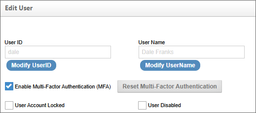
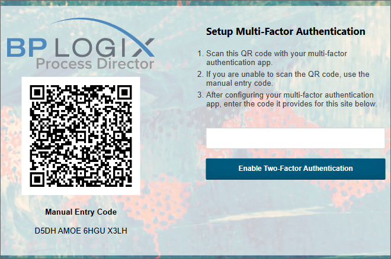
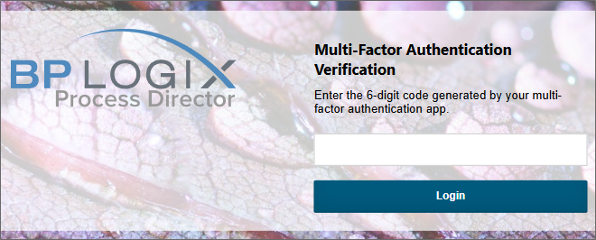

Process Director v6.1.300 and higher enables the use of Multi-Factor Authentication (MFA) for Built-in user accounts. Previously, MFA was only available for other account types, such as SAML or Windows accounts, that implemented MFA as part of the external authentication system. With the addition of MFA to Built-In accounts, all user account types can implement this heightened authentication method for increased security.
MFA generally relies on the use of an in dependent device, such as a tablet or phone, to supply an authentication token that is used to log in, in addition to the user name and password. The authentication token is supplied via an MFA app on the mobile device that refreshes the token every minute. There are several popular authenticator apps available, as well as stand-alone authentication devices (though they are rarely used). The only requirement for the MFA authentication app is that it's compliant with Google Authenticator. One popular authentication app, available for both Android and iOS devices, is Authy, which can be obtained easily from your mobile device's app store.
With MFA enabled, the user must have access to both their computer, as well as a separate device that provides an authentication token, in order to log into Process Director.
In the Edit User page of the User Administration section, each user account has two MFA properties available, the most important of which is the Enable Multi-Factor Authentication (MFA) property.

The Enable Multi-Factor Authentication (MFA) property will, when checked, activate the use of MFA for the specified user account, once the Edit User page is updated. Once activated, the user will, on their next login, be presented with an MFA activation screen immediately after attempting to log in with their existing user name and Password.

The activation screen displays a QR code that, when scanned in the user's authentication app, will create an MFA account for the Process Director installation. (A manual MFA entry code is also displayed below the QR code to manually enter into the authenticator app, if needed. Generally the authentication app simply enables you to scan the QR code.)
Once the MFA account is created and accessible in the authenticator app, a 6-digt authorization token will be displayed, which will refresh every 60 seconds with a new token. Once the token appears in the authentication app, the user can enter it into the text box provided, then click the Enable Two-Factor Authentication button. Assuming the token has been entered correctly, the user will be logged into Process Director automatically.
On every subsequent login, the user will enter their user name and password, after which they'll be directed to the MFA verification screen. The user will enter the 6-digit token from their authenticator app to complete their login.

Once activated, the user will not be able to log into Process Director without the token provided by the authentication app.
For Process Director v6.1.400 and higher, the "Remember Me" check box will appear on the main Login page enables the user to pause the system from requesting the MFA token for 30 days before asking for it again.
As mentioned, the 6-digit authentication token is refreshed with a new token in the authenticator app every 60 seconds. Process Director will, however, continue to respect the old token during a brief grace period if the refresh occurs prior to clicking the Login button. Once the token has been entered, and the Login button clicked, the user login is complete.
In cases where the user loses their mobile device, or switches to a new authentication app, the user will have to create a new MFA account in their authenticator app to log in again. To enable this, the Edit User page has a Reset Multi-Factor Authentication button. When clicked, this button will terminate the existing token sequence. The user, on their next login, will once again see the MFA activation screen, which will enable them to create a new MFA account in their authentication app, and log into the system again with the correct token for their new MFA account.